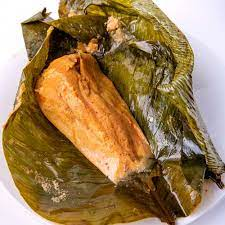

Cuisine
Savor the taste of Nigeria with its rich and diverse culinary traditions that reflect the nation's vibrant culture.

Jollof Rice
A West African favorite, this dish combines rice, tomatoes, and spices for a delicious meal.

Suya
A spicy meat skewer delicacy, often served with sliced onions and peppers.
Egusi Soup
A hearty soup made with melon seeds, vegetables, and assorted meats.
Akara
Deep-fried bean cakes, crispy on the outside and soft on the inside, commonly eaten as a snack or breakfast.
Moi Moi
A steamed bean pudding delicacy, Moi Moi is a versatile dish often served alongside rice dishes.
